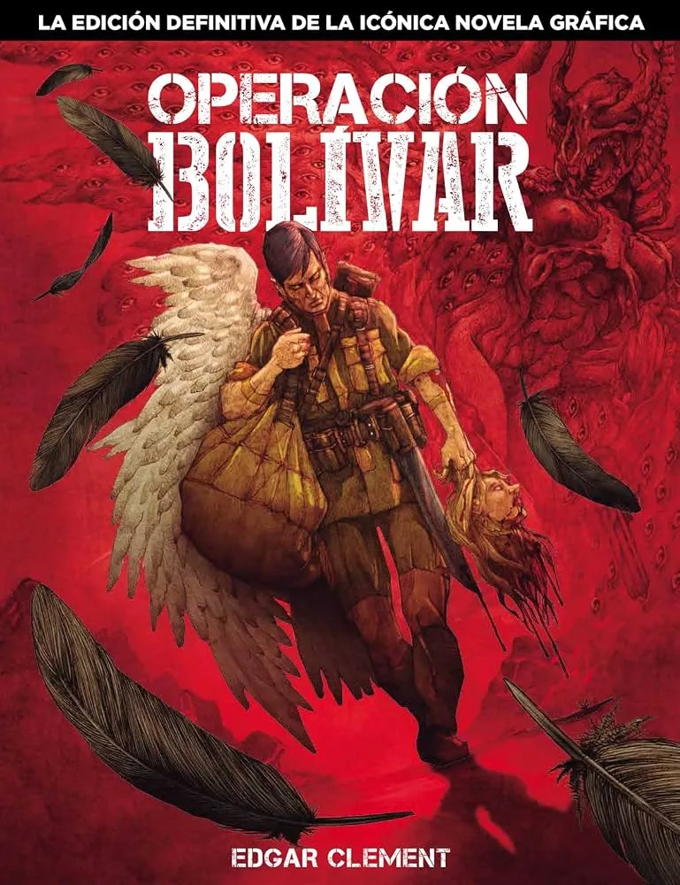
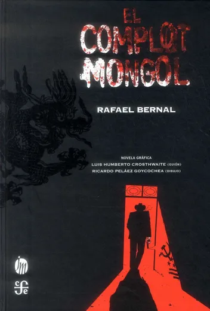
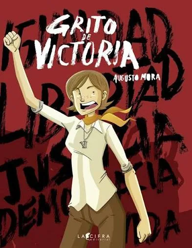
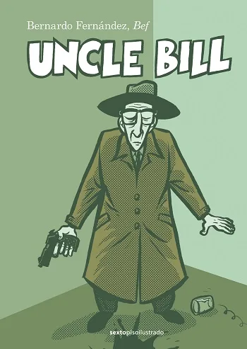
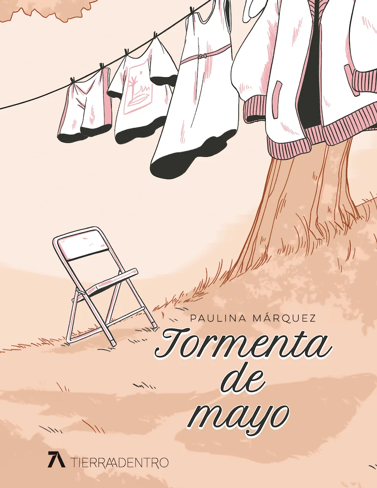

MÁS ALLÁ DE LOS SUPERHÉROES:
5 CÓMICS MEXICANOS QUE DEBES LEER SÍ O SÍ

El noveno arte en México arrastra un estigma absurdo. Para el consumidor promedio, la narrativa gráfica nacional se estancó en los pasquines de quiosco de mediados del siglo pasado o es inexistente frente al gigante estadounidense y el manga japonés. Pero la realidad subterránea es brutal: lejos de las capas y los disfraces coloridos, el cómic mexicano ha parido auténticas obras maestras de la crudeza, el misticismo y la sátira.
Si quieres purgar tus lecturas y descubrir el verdadero peso del talento nacional, aquí tienes cinco títulos obligatorios que se ganaron, a base de tinta y cinismo, un lugar sagrado en cualquier estantería que se respete.

1. Operación Bolívar (Edgar Clément)
Si existe una biblia de la novela gráfica mexicana contemporánea, es esta. Edgar Clément tomó el mito judeocristiano y lo arrastró por el lodo de la frontera mexicana. En este universo, los ángeles existen, pero no son seres de luz adorables; son fauna celestial cazada por mafias y carniceros locales para traficar con sus órganos, plumas y huesos en el mercado negro. Es un thriller psicodélico, sucio y magistral que funciona como una alegoría descarnada del narcotráfico, el colonialismo y la descomposición social de América Latina.

2. El Complot Mongol (Luis Humberto Crosthwaite y Ricardo Peláez)
Adaptar la novela negra por excelencia de la literatura mexicana era un suicidio artístico, pero el resultado en viñetas es impecable. Con el trazo anguloso y expresionista de Ricardo Peláez, la historia del asesino a sueldo Filiberto García cobra una atmósfera asfixiante en las calles del Centro Histórico de la Ciudad de México de los años sesenta. Es un noir ácido, lleno de jerga callejera, paranoia internacional en plena Guerra Fría y una crítica feroz a la corrupción institucional que el país nunca ha podido sacudirse.

3. Grito de Victoria (Augusto Mora)
El cómic nacional también es trinchera histórica. Augusto Mora entrega una obra indispensable que entrelaza dos épocas de represión estudiantil en México: la matanza del Jueves de Corpus en 1971 (El Halconazo) y las protestas sociales de 2012. Lejos de la frialdad de un libro de texto, Mora utiliza la narrativa gráfica para explorar el trauma colectivo, la disidencia juvenil y la impunidad sistemática. Un recordatorio incómodo, en blanco y negro, de que la memoria es el arma más peligrosa contra el olvido.

4. Uncle Bill (Bernardo Fernández "Bef")
Bef es uno de los pilares de la novela gráfica moderna en el país, y en esta obra se desquita mezclando la biografía con el ensayo gráfico. El cómic narra la estancia del legendario escritor de la Generación Beat, William Burroughs, en la Ciudad de México de los años cincuenta, lugar donde accidentalmente asesinó a su esposa de un balazo jugando a Guillermo Tell. Es una disección brillante sobre las adicciones, el remordimiento y la fascinación (a veces destructiva) que los artistas extranjeros sienten por el caos mexicano.

5. Tormenta de Mayo (Paulina Márquez)
Para cerrar, una joya que demuestra que la sutileza también puede ser demoledora. Ganadora del Premio Nacional de Novela Gráfica Juvenil, Paulina Márquez se aleja de la violencia urbana para adentrarse en la complejidad psicológica de la infancia en la provincia mexicana. A través de un dibujo bellísimo, limpio y costumbrista, la llegada de una niña nueva a un pueblo estancado desata tensiones sutiles pero profundas. Es una obra de arte que demuestra la versatilidad temática que vive la escena independiente actual.
💬 Reseña de autor: El veredicto final
Seguir creyendo que en México no se hace cómic de calidad es síntoma de pereza mental. Estas cinco obras demuestran que el talento nacional no necesita imitar las fórmulas desgastadas del cómic norteamericano de superhéroes para contar historias potentes. El cómic mexicano es incómodo, es místico, es político y, sobre todo, es real. Si este fin de semana no le das una oportunidad a estas viñetas, te estás perdiendo la mejor radiografía gráfica del país.
OTROS RUIDOS

Los héroes de cómic más políticos de la historia
Izquierda, antifascismo y derechos humanos.

Plastic Man: El héroe más ridículo y peligroso
El personaje más roto de los cómics.

Capitán América: La pesadilla de los nacionalistas
Steve Rogers, disidente político radical.